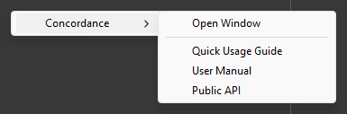

Install Concordance
Requirements
Concordance requires the following:
- Unity 6.0 or later, on any build target, with the Mono or IL2CPP scripting backend.
- The Mono Cecil package (
com.unity.nuget.mono-cecil) 1.10 or later. Importing Concordance installs it. - A code editor that runs Roslyn 4.3 or later, such as Visual Studio 2022 17.3, Rider 2022.3, or the C# extension
for Visual Studio Code 1.25. An older code editor marks the
Modifiertype as an error, although Unity compiles your scripts.
Install the package
To install Concordance, perform the following steps:
- Open the Package Manager window: go to Window > Package Manager (Unity 6.1 and later: Window > Package Management > Package Manager).
- Select My Assets, then select Concordance in the list.
- Select Download if Concordance isn't downloaded yet, then select Import.
- In the Import Unity Package window, select Import.
Your existing code keeps working as it is: a member's writes run as written until it has a modifier, an observer or a watch. To open the Concordance window and this documentation, go to Tools > Concordance.

Reference Concordance from an assembly definition
Scripts in the default assembly, Assembly-CSharp, use Concordance with no setup. An assembly
definition of your own needs a reference to Concordance: without it, its scripts can't write modifiers, and
Concordance doesn't track their writes. To add the reference, perform the following steps:
- In the Project window, select the assembly definition asset.
- In the Inspector window, add Concordance to Assembly Definition References.
- Select Apply.
The Concordance window can also add the reference, from any member that the assembly writes. For more information, refer to Track an assembly.
Try the demo
The demo scene, Assets/Concordance/Demo/Scenes/Concordance Demo.unity, is a short level of gravity
zones that you play twice: first with zones that use plain writes, where overlapping zones leave the player with the
wrong gravity, then with zones that use modifiers.
The scripts to read are in Assets/Concordance/Demo/Scripts/Concordance Usage (Read Me):
| Script | Description |
|---|---|
LegacyGravityZone | Changes the player's gravity with plain writes, and undoes its change when the player leaves. |
GravityZone | Changes the player's gravity with a modifier, and stops the modifier when the player leaves. Additions apply first, then multiplications, then a zone that sets the gravity, whichever zone the player entered first. |
GravityArrow | Follows the player's gravity with Observe. |